Building Clotho
Everything you need to buy for Clotho and the optional foot pedal, and how to put it all together.
Prices checked October 9, 2026, and they will probably have changed by the time you read this. These are not affiliate links or endorsements, just the parts I used or the closest things I could find on the jungle website.
What it costs
Pretty much everything comes in packs much bigger than one build needs (you need four cup hooks, and the link is for fifty). If you build one by yourself you buy whole packs, which comes to about $187 for Clotho, plus shipping on the motor and driver, and about $17 more for the foot pedal. The parts that actually end up in each Clotho come to about $97, plus about $10 for the pedal, and the rest goes in your parts bin. If you have friends, split the packs. If you don’t, this is a good way to make some.
Parts
Clotho
| Part | Listing | Use | Pack | Pack price | Per unit |
|---|---|---|---|---|---|
| BLDC motorPlus shipping | StepperOnline 57BSD76-24-01 | 1 | 1 | $20.86 | $20.86 |
| BLDC driverPlus shipping | StepperOnline BLD-510B | 1 | 1 | $19.86 | $19.86 |
| Power supply, 24V 6A, 5.5x2.5mm plug | ALITOVE 24V 6A 144W | 1 | 1 | $28.99 | $28.99 |
| Power jack, 5.5x2.5mm, 11mm panel holeReplaces the 5.5x2.1mm jack, which didn't match the plug | E-outstanding DC-099 | 1 | 5 | $7.99 | $1.60 |
| Direction switch, DPDT ON-OFF-ON | KCD4 rocker | 1 | 2 | $6.99 | $3.50 |
| Speed pot, B10K linearSame pack covers the foot pedal pot | Comimark WH148 B10K | 1 | 10 | $6.99 | $0.70 |
| 6804 bearing | HiPicco 6804-2RS | 1 | 10 | $9.99 | $1.00 |
| 608 bearingsPlus 2 per extra bobbin | DEEG 608-2RS C3 ABEC-5 | 3 | 24 | $8.99 | $1.12 |
| 8mm x 150mm rodDress the ends before fitting bearings | Litoexpe linear rod | 1 | 2 | $5.49 | $2.75 |
| Motor pulley, 22mm V, 8mm boreLow stock; same pulley in a 2-pack: B0CTMRX59K | HARFINGTON | 1 | 1 | $8.79 | $8.79 |
| Drive belt, 5mm PU roundAbout 200mm per build, plus an optional 10mm piece for the brake screw | uxcell, 3 m | ~210 mm | 3 m | $8.29 | $0.58 |
| Brake spring | MroMax tension springs | 1 | 15 | $12.79 | $0.85 |
| M4 square nuts | Waziaqoc 304 SS | 26 | 100 | $5.99 | $1.56 |
| M4 x 12 thumbscrewsFour flyer hooks and the brake spring | uxcell knurled knobs | 5 | 12 | $6.99 | $2.91 |
| 1/2in cup hooksOr buy a few loose at a hardware store | Black cup hooks | 4 | 50 | $4.79 | $0.38 |
| M4 screw kit, 6-30mm, nuts, washersAll the M4 screws and hex nuts | Hincell M4 assortment, 304 stainless | 35 | 520 | $8.99 | $0.61 |
| M3 screw kit, 6-30mm, nuts, washersDriver and motor bracket screws, nuts and washers | Sutemribor M3 assortment, 304 stainless | 14 | 546 | $4.99 | $0.13 |
| M5 x 20 sets, nuts, flat and lock washersMotor mount | BNUOK M5 x 20, 60 sets, 304 stainless | 4 | 60 | $9.66 | $0.64 |
| Total | $187.43 | $96.82 | |||
Foot pedal (optional)
| Part | Listing | Use | Pack | Pack price | Per unit |
|---|---|---|---|---|---|
| Microcontroller, Pro Micro 5V 16MHz | Atmega32U4 Type-C | 1 | 1 | $8.99 | $8.99 |
| 1/4in stereo jacks | Luomorgo 6-pin | 2 | 20 | $7.99 | $0.80 |
| Pedal pot, B10K linearAlready bought | From the Clotho pot pack | 1 | – | – | – |
| Total | $16.98 | $9.79 | |||
Fasteners
The three screw kits above cover all of these. Most of the general M3–M5 assortments skip M4×10 and M3×20, which is why there’s one kit per size instead of one big one. The lengths are checked against the hole depths in the CAD model, so they should be right; if one isn’t, let me know.
| Fastener | Qty | Where |
|---|---|---|
| M4 × 10 socket head, hex nut | 6 | Riser halves, 3 each. A 12 nearly touches the flyer. |
| M4 × 12 socket head | 10 | Spreaders and electronics housing to base (6), flyer arms, inner holes (2), motor brackets to base (2) |
| M4 × 16 socket head | 8 | Front riser to base (2), rear riser to base (2), rear riser to spreaders (4) |
| M4 × 20 socket head | 4 | Flyer arms, outer holes (2), electronics housing to front riser (1), driver (1, with a hex nut) |
| M4 square nut | 26 | Everywhere else an M4 needs a nut |
| M5 × 20 socket head, flat washer, lock washer, nut | 4 | Motor to front riser. The flange holes go through, and a 16 won’t reach the nut. |
| M3 × 20 socket head, hex nut, flat washer | 2 | Driver to brake spring retainer |
| M3 × 12 socket head, flat washer | 4 | Motor brackets into the motor’s tapped holes |
Optional hardware and tools
The parts list uses 304 stainless for all the screws and nuts, so everything matches. Mixing the cheapest kit of each size would save about $2, which isn’t worth having a bunch of mismatched hardware. If you’d rather have black, the black oxide versions of the same kits are below, for about the same money. Brass is available too, but only one size per pack (there are no M3/M4/M5 kits), so a full brass set comes to somewhere around $70.
The motor mount screws are right on the front where you see them, and button heads look nicer there than socket heads (they’re what’s in the build guide pictures). The socket heads on the parts list work just as well; I used them to keep the parts list down. The button head kit below has both sizes: four M5×20 for the motor and four M3×12 for the motor brackets. The M5s still need their flat washers, lock washers and nuts from the M5 sets.
Everything except the rocker switch has solder lugs, so you’ll need a soldering iron. The switch has quick-connect tabs, so you can either solder its wires or crimp spade terminals onto them; the crimper and terminal kit below are only for that (and for anything else that comes with spade tabs or pre-soldered leads).
| Part | Listing | Use | Pack | Pack price | Per unit |
|---|---|---|---|---|---|
| Black M4 screw kit, 6-30mm, nuts, washersIn place of the stainless M4 kit | Kernmax M4 assortment, black oxide | 35 | 520 | $7.99 | $0.54 |
| Black M3 screw kit, 6-30mm, nuts, washersIn place of the stainless M3 kit | Kernmax M3 assortment, black oxide | 12 | 950 | $6.99 | $0.09 |
| Black M5 x 20 sets, nuts, flat and lock washersIn place of the stainless M5 sets | BNUOK M5 x 20, 60 sets, black oxide | 4 | 60 | $8.65 | $0.58 |
| Button heads for the motor mounts (M5x20, M3x12)In place of the socket heads on the motor mounts; the M5s still need their washers and nuts | Mywish M2-M5 button head kit, 1290 pcs | 8 | 1290 | $17.99 | $0.11 |
| Soldering iron kit, if you don't have oneEverything except the switch has solder lugs | 60 W adjustable soldering iron kit with stand and solder | 1 | 1 | $13.99 | $13.99 |
| Crimper for insulated terminalsOnly if you crimp the switch instead of soldering it | Plustool ratcheting crimper, AWG 22-10 | 1 | 1 | $16.99 | $16.99 |
| Insulated spade terminals, femaleFor the switch's quick-connect tabs; the kit covers all the common tab sizes | Feggizuli 330-piece kit, 2.8, 4.8 and 6.3 mm | 6 | 330 | $8.99 | $0.16 |
From your shop
- PETG for the structural parts, or ABS or ASA if it’s going to live somewhere hot. Clotho takes a bit more than half a roll.
- A couple feet of 18 AWG stranded wire. A few colors makes things easier, if you have them.
- Solder, and some small heat-shrink tubing for the joints.
- About 300 mm (12″) of cotton twine for the brake.
- A bit of sandpaper, a couple of square inches of 180 grit or so.
- Optional: a scrap of 1–2 mm neoprene or EPDM for the motor gasket, and some blue Loctite.
- For the foot pedal: a 1/4″ stereo cable, as long as you like with whatever ends you like, and an M4 × 80 with a nylock nut (or a couple of shorter screws) for the pivot.
Build guide
Most of this should be fairly intuitive once you have the parts in your hands. All the holes and recesses are the right size, and the wrong parts won’t fit or will just look silly. Screw lengths are in the fasteners table above, and the steps call them out where it matters.
The drawings are made from the CAD model. Each one shows the parts that step adds, pulled apart along the way they go together, with a parts list. The latest version of this guide, with color renders, is at thunderbirdlabs.com/clotho-build.html, and the files are on Printables (printables.com/model/1779646) and GitHub (github.com/tbirdlabs/Clotho-eSpinner).
The pictures are made from the CAD model: a render on the left and an exploded drawing with a parts list on the right (click either one to see it bigger). The parts you’re adding in that step are gray, and the ones you’ve already put together are in color. There’s also a printable PDF of this page, with just the drawings.
Tools
- A handful of appropriate Allen keys (the screw kits come with them, but nicer ones are…nicer)
- A pair of needle-nosed pliers
- A pair of long tweezers (or just use the pliers)
- A small soft-blow hammer
- A small screwdriver
- A soldering iron
- A heat gun, for joining the belt
- Optional but nice: a multimeter, to check your wiring before you plug stuff in and let the magic smoke out of the expensive bits
- Optional: a crimper, if you crimp the switch’s wires instead of soldering them
- Probably a dozen other things I’ve forgotten
Printing
- PETG for the structural parts, and especially the flyer, which flexes every time it goes around and should bend rather than crack. PLA is actually stiffer, but it’s more brittle and goes soft at a lower temperature. The motor itself shouldn’t get hot unless you’re really hogging it, which you can’t do while actually spinning (unspun wool can’t really take 90 W of linear load), so the heat you need to worry about is wherever it lives. If that’s somewhere hot, or the inside of a car with the windows rolled up, print it in ABS or ASA.
- 0.20 mm layers, 5 perimeters, 5 top and bottom layers, and an isotropic infill (gyroid or cubic), same as Arachne.
- All the parts are provided in assemblies; print one of each unless a step tells you otherwise. Supports may be needed in a few places depending on your printer. Unlike Arachne, where I had to choose between printability and function, this time I chose function.
- The STEP file is the entire CAD model. Your slicer will happily load it and try to print it…but maybe don’t.
Prepare the rod and bearings
- Cheap 8 mm rod is usually sheared to length rather than ground, which crushes the last centimeter or so of each end even though it measures a true 8.00 mm in the middle. Wrap the rod in something to protect it, chuck it in a drill, and file a light chamfer (about 0.25 mm) on both ends.
- Work the ends down with 180 grit until a 608 slides on and off by hand. The clearance here matters and it’s partly personal preference: go too far and the rod spins in the bearings and makes noise, not far enough and bobbins are a fight to get on and off. The rod should turn the bearing, not spin inside it. Take your time and it can fit and work quite well.
- Test-fit every bearing before it goes into a part. If one won’t go on, suspect the rod first.
- Cheap 608s tend to come packed with grease thick enough that the rod spins in the inner race instead of the balls rolling. A jar of alcohol and a shot of silicone spray takes care of that.
Wiring
The wiring gets done on the bench in step 7 of the next section, before anything goes into the frame, so here’s how it all connects first. These are the same connections as the wiring diagram (v11), written out one at a time. If you’re not building the foot pedal, there’s also a version without the pedal jack.


- Solder or crimp. Solder everything you can. The pot, the jacks and the DC jack only have solder lugs. Slide a piece of heat-shrink onto the wire before you solder it and shrink it over the joint after. The rocker switch has quick-connect tabs, so you can crimp female spade terminals onto its wires instead; the same goes for anything that comes with spade tabs or pre-soldered leads.
- Holes first. If a wire has to go through a hole, put it through the hole before you solder the other end. And before you close up a compartment you can’t get back into, like the electronics housing, make sure every wire that needs to come out of it already does.
- Tip, ring and sleeve. A ¼″ stereo plug has three metal contacts separated by black plastic bands: the tip at the very end, the ring just behind it, and the sleeve, the long part nearest the handle. (The names come from old telephone switchboard plugs.) Each one has a spring contact inside the jack, and each spring has its own solder lug, so follow the metal from each lug to its spring to see which is which. On the wiring diagram they’re T, R and S.
- The switch lugs. The jack on the spinner has six lugs. The extra three are little switches that touch the tip, ring and sleeve springs when nothing is plugged in. Plug a plug in and watch: the springs get pushed away from them. Those three are the switch lugs, and they’re the ones that go to the panel speed pot. On the diagram they’re TN, RN and SN, the switch lug for the tip, ring and sleeve.
- Motor to driver. The phase wires are the fat ones (20 AWG): yellow to MA, green to MB, blue to MC. The hall wires are the skinny ones (26 AWG): yellow to HA, green to HB, blue to HC, red to +5V and black to GND, all on the driver’s motor connector. Both sets are yellow, green and blue, so go by the size of the wire, not the color.
- Power jack. The DC jack has two lugs, one for the pin in the middle of the socket and one for the outer contact. The middle pin goes to V+ on the driver’s power connector (the power supply on the parts list is center-positive), and the outer contact goes to the GND right next to it.
- Direction switch. On the back of the KCD4 the six tabs are in two rows of three. The middle tab of each row is the one that switches between its two end tabs. In one row, jumper the two end tabs together, then jumper one of them across to the end tab beside it in the other row, and run that to GND on the driver’s control connector. The middle tab of the jumpered row goes to EN, the middle tab of the other row goes to F/R, and the last end tab isn’t used. One side of the rocker runs the motor one way, the other side runs it the other way, and the center stops it. If S and Z come out backwards, don’t rewire it; just turn the switch over in its mount (see Setup).
- Pedal jack. The tip goes to +5V on the driver’s control connector, the ring goes to GND, and the sleeve goes to SV, the speed input. That’s different from most audio gear, where the sleeve is ground, and it’s on purpose: the sleeve connects last, so neither +5V nor ground gets shorted into the driver while you’re plugging in.
- Panel speed pot. The pot goes on the jack’s three switch lugs. Hold it with the shaft pointing at you and the pins at the bottom: the right-hand pin goes to the tip’s switch lug, the middle pin to the sleeve’s switch lug, and the left-hand pin to the ring’s switch lug. That way turning the knob clockwise speeds the motor up. Get this one right the first time; the pins are hard to swap once they’re soldered. With nothing plugged in, the switch lugs connect the pot to the driver, and plugging in the pedal disconnects it. Plug and unplug the pedal with the switch centered. If you’re skipping the pedal, leave the jack out and wire the pot straight to the driver instead, holding it the same way: right-hand pin to +5V, middle pin to SV and left-hand pin to GND.
- Driver settings. There’s nothing to set inside the driver. The BLD-510B doesn’t have DIP switches; it comes set from the factory for a motor with 4 pairs of poles, like the 57BSD76, with a top speed of 3,500 RPM, and that’s what Clotho needs. The two trim pots on the outside are covered in Setup.
The BLD-510B has come in two versions that treat the EN terminal opposite ways. On a V2.0, connecting EN to GND makes it run, which is how the diagram is drawn. A V2.4 runs when EN is not connected. If your motor runs with the switch centered, you have a V2.4; section 4.3 of the driver’s manual covers it.
The foot pedal’s wiring is in the foot pedal section.
Risers, base and electronics
- Press the two halves of the front riser together by hand to check the alignment, then gently tap them into place. Do the same for the rear riser, but put a tested 608 in its cavity first.
- Bolt each riser’s halves together with three M4×10 and hex nuts. Longer bolts will hit the flyer, and shorter ones may not bite enough thread.
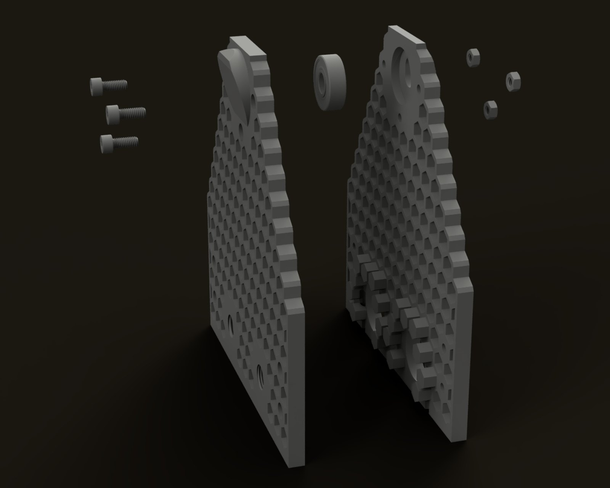
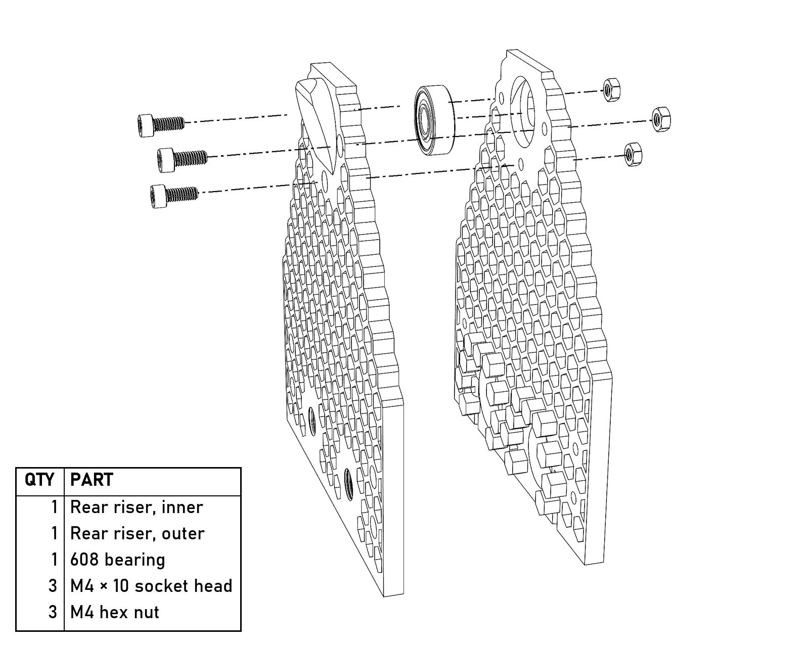
The rear riser: two halves, a 608 in its cavity, three M4×10 and three hex nuts. The front riser goes together the same way, without the bearing.
- Optional: a 1–2 mm neoprene or EPDM gasket between the motor face and the front riser quiets things down a bit by breaking the path the noise takes into the frame. Not required, just nice. If you want it, now’s the time.
- Attach the motor to the front riser with four M5×20, flat washers in front and lock washers and nuts in back. Clearance around the motor flange is tight, about 2.5 mm, so get creative with your tweezers if you need to. I had to stuff a large screwdriver between the nuts and the motor to hold them while I tightened the bolts.
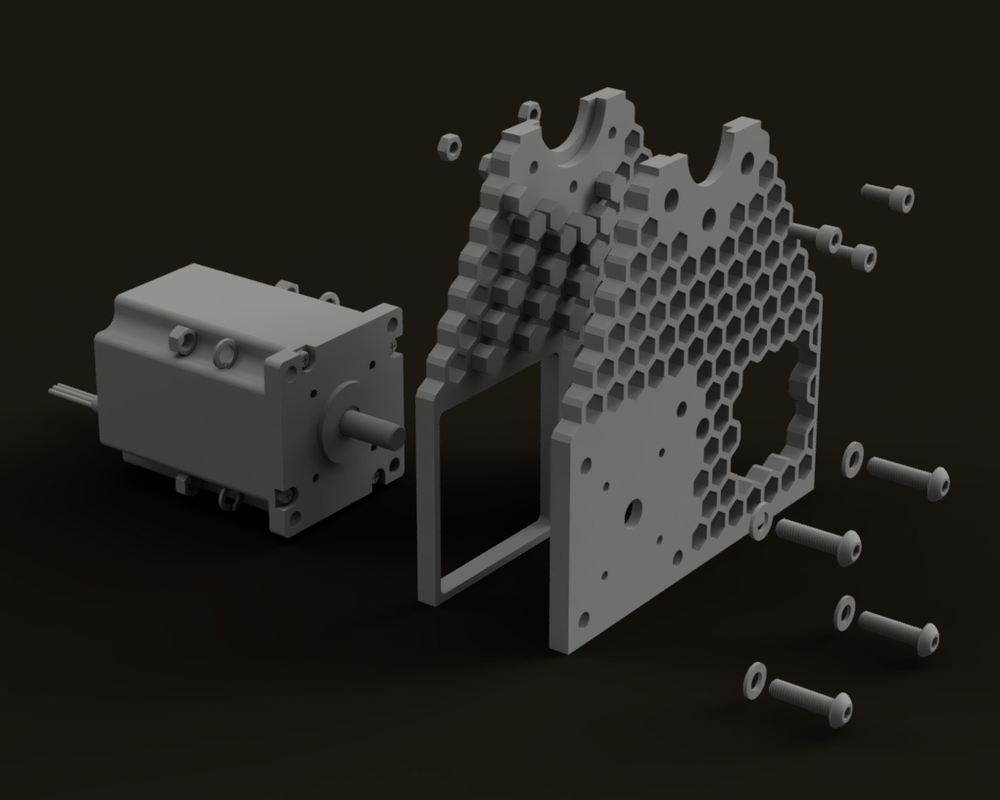
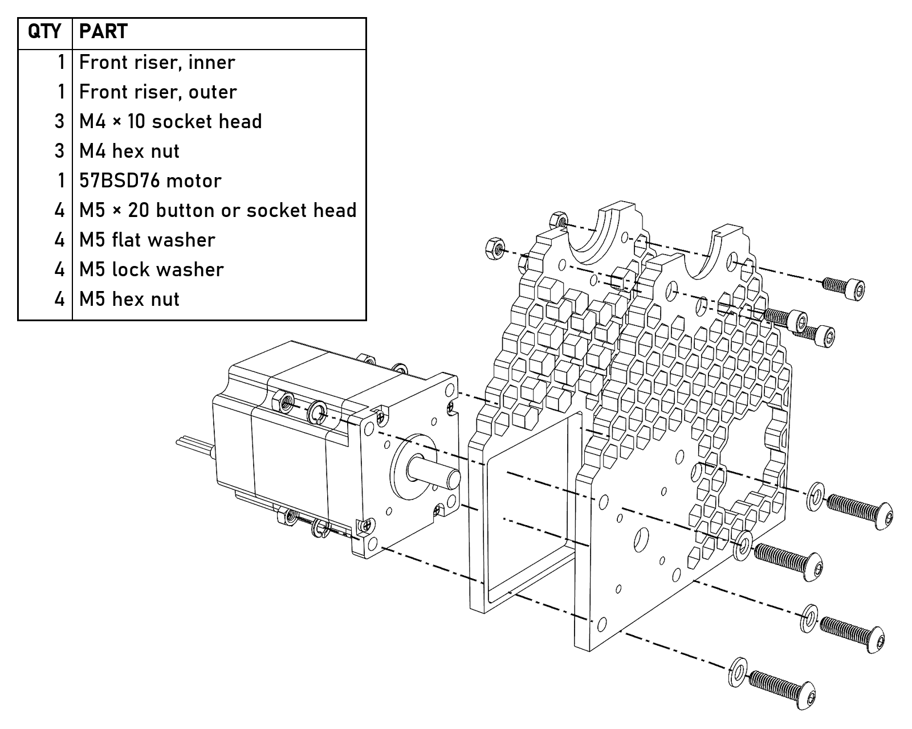
The front riser and motor: four M5×20 with flat washers in front, and lock washers and nuts behind the motor flange. The pictures show button heads because they look nicer, but the socket heads on the parts list work just as well.
- Fit the motor brackets to the motor with two M3×12 and flat washers each. The brackets are pretty thin, and the washers cost nothing (they come in the M3 kit).
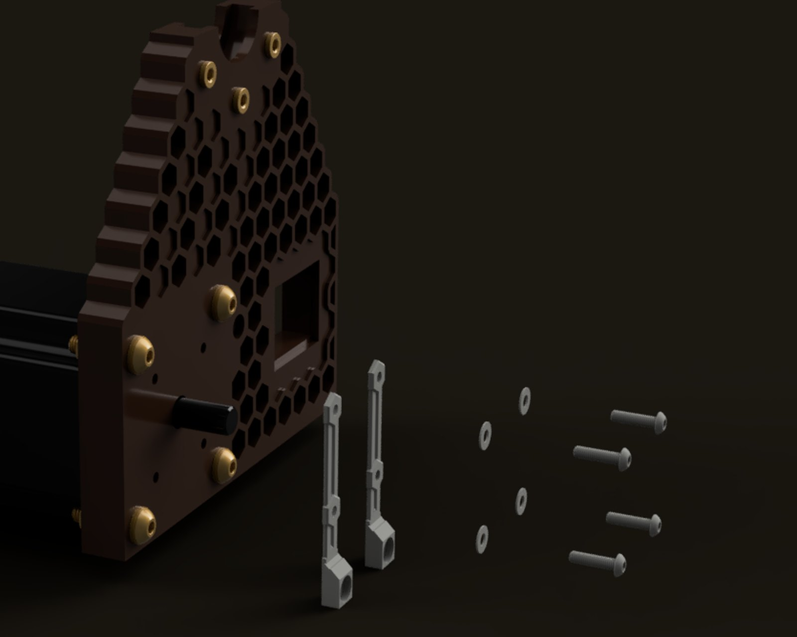
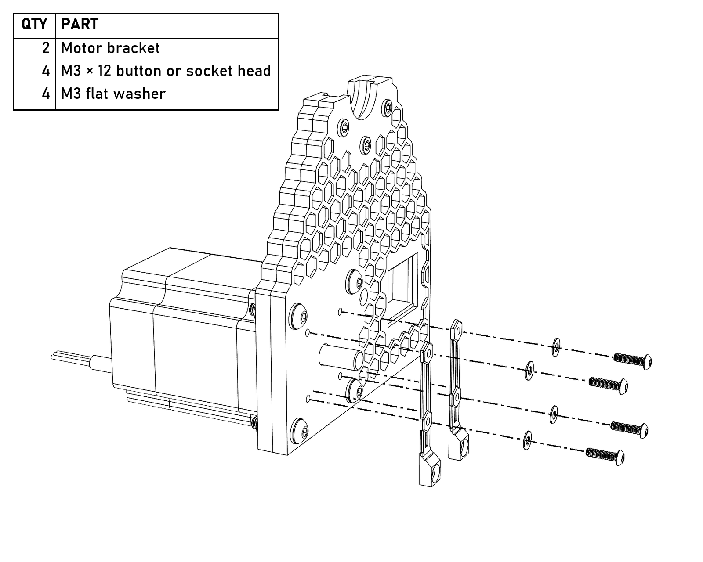
Two motor brackets, two M3×12 and washers each, into the tapped holes in the motor flange.
- Install the pulley on the motor’s D-shaft and tighten the grub screws.
- Wire up the switch, speed pot and power jack following the wiring steps above or the wiring diagram (v11; it’s also in the files). Cut the wires long for now; we’ll trim them later. Folding the pins over before soldering the wires on can buy a bit of extra clearance.
- The motor’s phase wires and hall sensor wires are both yellow, green and blue, and the only way to tell them apart is the gauge: the phase wires are the fat ones (20 AWG) and the hall wires are the skinny ones (26 AWG). This is the easiest wiring mistake to make.
- The BLD-510B has shipped with its enable logic inverted between revisions (the manual itself shows two versions behaving opposite ways), and the revision printed on the board won’t necessarily tell you which one you have. Bench-test yours.
- Before you power anything up, turn both trim pots (speed limit and current limit) all the way down. The driver ships set to 3,500 RPM and full current, which is more than enough to put the flyer into low earth orbit.
- With everything still on the bench, hook it all up to the driver and test that the motor spins, reverses, and has speed control. Really, do this step. Once it’s assembled most of the wiring is hidden, and I promise you won’t want to take the thing apart to find a fault.
- Disconnect everything from the driver and install the jack, pot and switch in the risers and electronics housing.
- Route the pot and switch wiring through the electronics housing, and make sure every wire that needs to come out of it is through its hole now. Bolting the housing to the front riser closes up the electronics bay, so before it goes on, put in the nuts you’ll need later that you can’t get to once it’s together: a square nut in the recess for the M4×20 that holds the housing to the riser, the M4 hex nut for the driver’s M4×20, and the two square nuts for the base, one in the bottom of the front riser and one in the bottom of the housing. The riser’s nut goes in from the back, the housing’s two square nuts from the sides, and the hex nut from the front. Run a screw into the hex nut temporarily so it doesn’t fall out while you’re putting the housing on (and the same for any square nut that won’t stay put). The two square nuts in the back of the housing can wait; they’re easy to reach later. Then bolt the housing to the front riser with an M4×20 and put the speed knob on the pot.
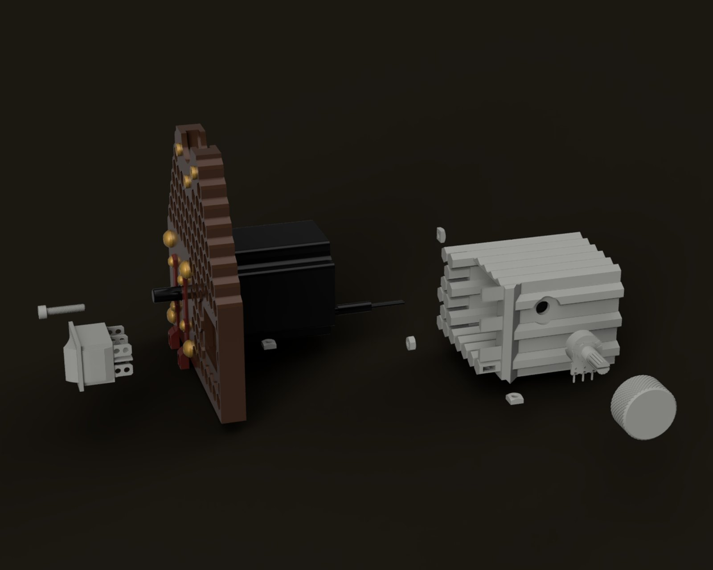
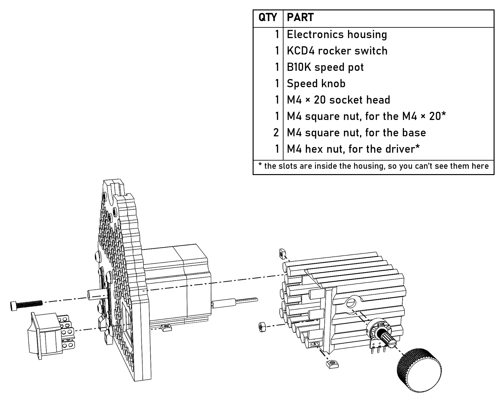
The switch goes in from the front. The pot goes in from inside the housing, with its shaft out through the hole; it’s drawn outside so you can see it. Each nut is pulled out the way it goes in, and the ones marked with an asterisk sit in slots inside the housing that you can’t see in the drawing.
- Push square nuts into the two motor bracket slots in the front of the base. Then, with your third and fourth hands, set the motor, front riser and electronics housing in place and bolt them to the base from underneath with two M4×16 into the square nuts you put in earlier. If a square nut won’t stay put, run a screw into it temporarily.
- Bolt each motor bracket to the base with an M4×12.
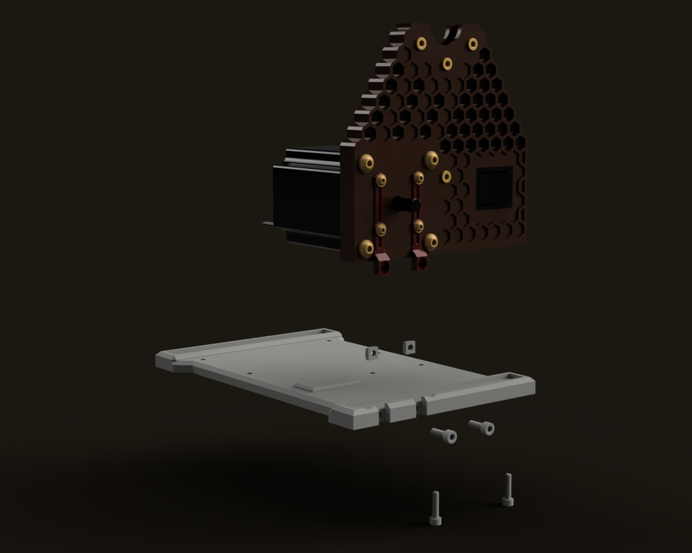
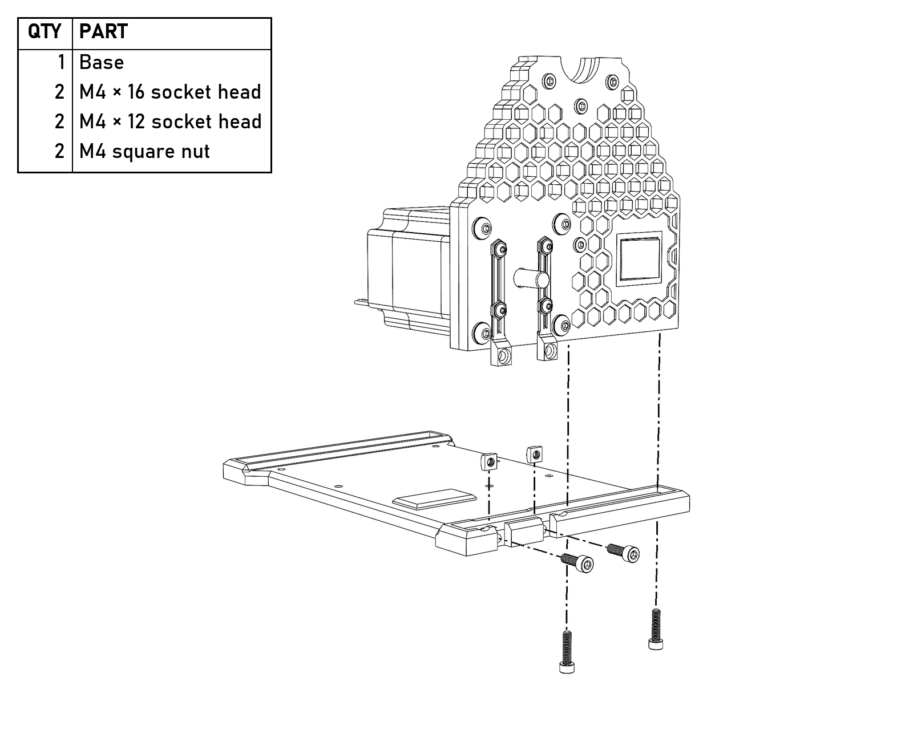
The front riser, motor and housing go onto the base with two M4×16 from underneath, and the motor brackets bolt to the front of the base with M4×12 into square nuts.
- Before the next step, screw the brake tension screw into its spreader and work it in and out a few times. Depending on your tolerances it can be very stiff at first, but it wears in quickly. Then take it back out; it goes in for good in the final assembly, and until then it’s just in the way.
- Be careful with this one. To get the spreaders in, you have to take out the temporary screw holding the driver’s hex nut in place, and you REALLY don’t want to lose that nut. Push square nuts into the bottoms of both spreaders and the back of the electronics housing. Then bolt both spreaders and the electronics housing to the base from underneath with M4×12 (M4×20s work here too, if that’s what you have).
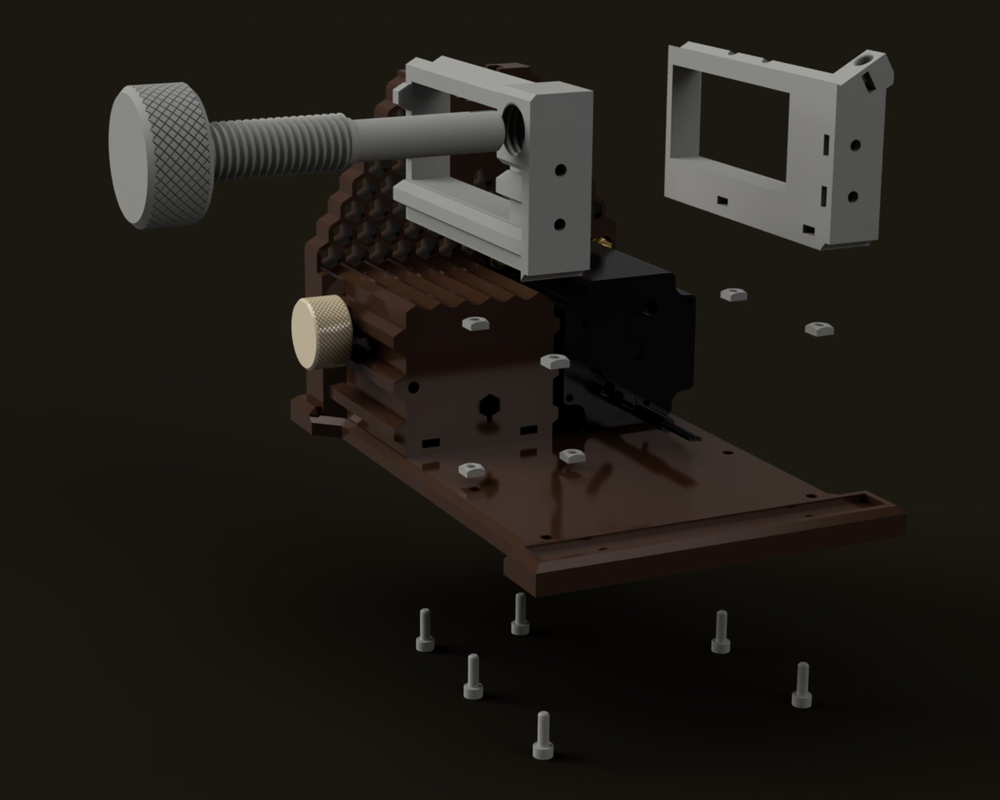
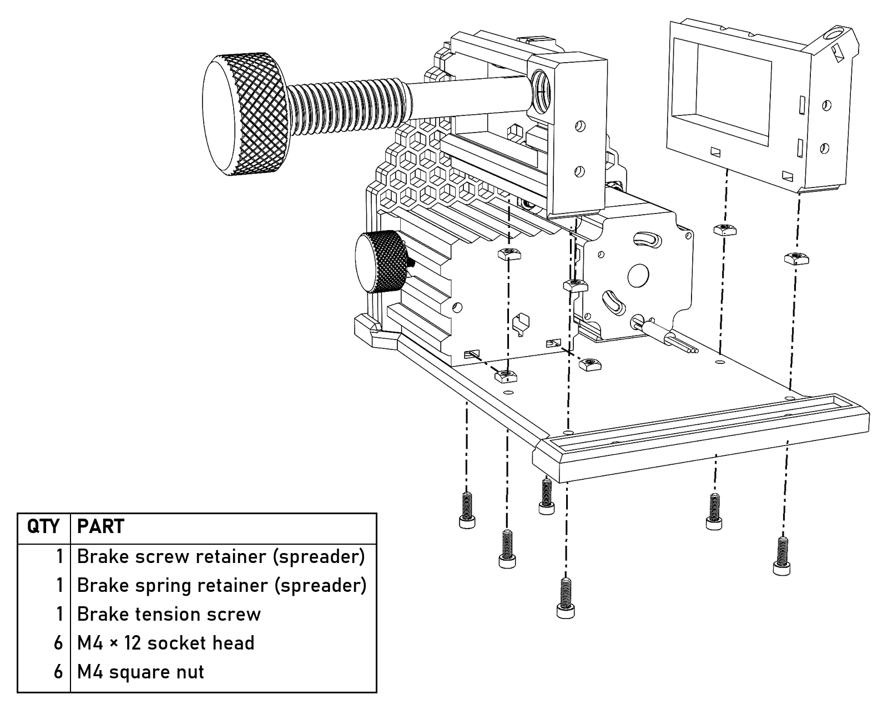
From behind: the brake screw retainer on the left, with the brake tension screw you work in and out in the step before, and the brake spring retainer on the right. Six M4×12 come up through the base, four into the spreaders and two into the back of the electronics housing.
- Take the connector blocks off the driver, then slide it into its recess in the spreaders from either side, heatsink up so the flyer cools it. Bolt it in with an M4×20 through the brake screw retainer and the driver’s mounting ear into the hex nut in the electronics housing, and two M3×20 through the brake spring retainer, with a washer and nut on the end of each, up against the driver. Leave the connector blocks off for now; it’s much easier to wire them off the driver, and they go back on once the rear riser and its jacks are in.
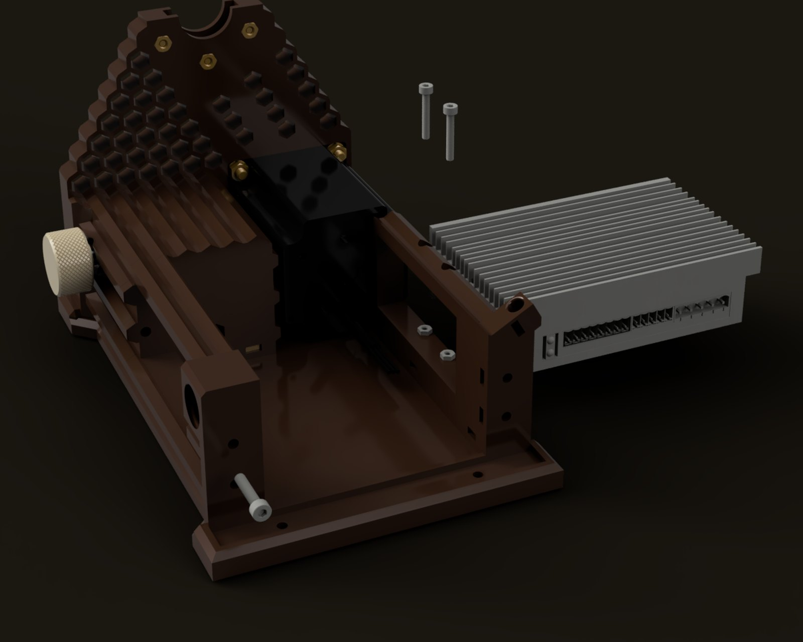
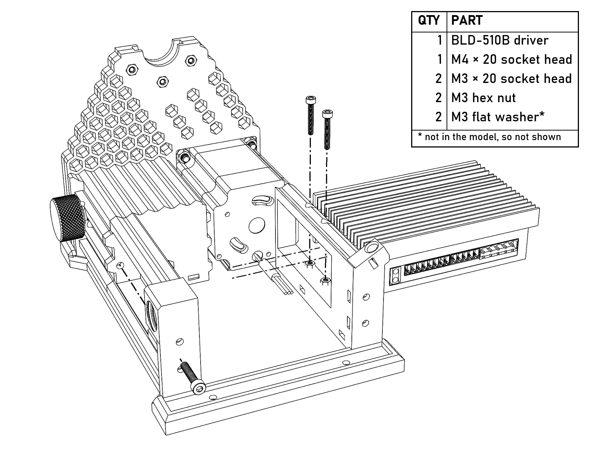
The driver slides in from either side, with its connector blocks off. The M4×20 goes in from the back, through the brake screw retainer and the driver’s ear into the hex nut in the housing, and the two M3×20 come down through the brake spring retainer with their washers and nuts against the driver.
- Set square nuts in the rear riser and in the rear of the spreaders (making sure to put one in the oddly tilted rear-facing slot in the brake spring retainer, for the thumbscrew that holds the brake spring later), then bolt the rear riser to the base and spreaders with six M4×16. Now wire the connector blocks (see Wiring), route all the wiring underneath, trim it to length, and plug the blocks back into the driver. Don’t forget the wiring from the rear riser. Route everything carefully, and remember the brake tension screw is going right where that rat’s nest is now.
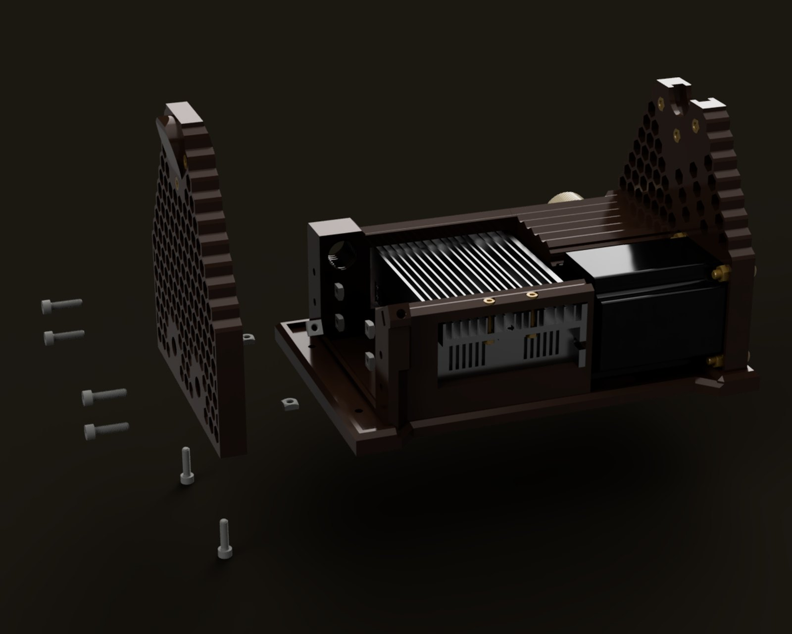
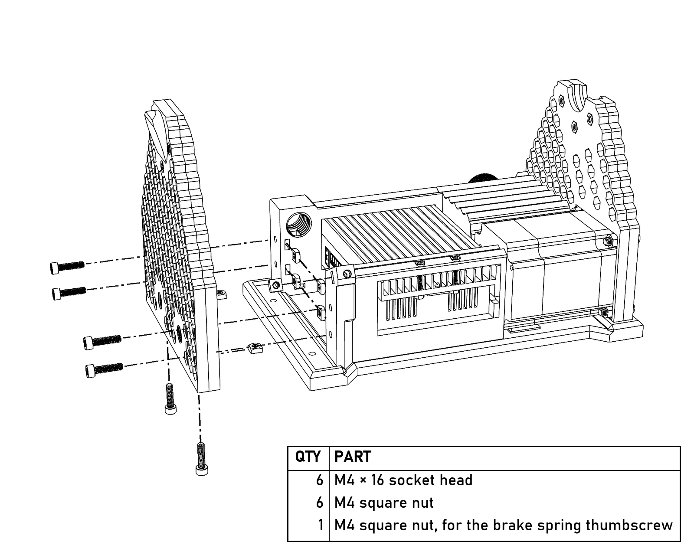
Four M4×16 through the rear riser into the spreaders, and two up through the base into the rear riser. The spreaders’ nuts go in toward the centerline, the rear riser’s from the front, and the tilted one in the brake spring retainer from the back.
- Test everything again: switch centered (off), knob at minimum, power on. The green run light should be steady and the red alarm light off. Flip the switch one way and make sure the motor spins smoothly in that direction at low speed, then stop it and check the other way. Always stop the motor before reversing.
Flyer and bobbin
- With the flyer body on a smooth, hard surface, gently tap the rod into its recess. It may take a bit of force, but you should hear the sound change when the rod bottoms out. Or, if you left it chucked up in the drill from the rod prep, just spin it in.
- You can lightly lubricate the rod at this point if you like. Use something dry, like silicone or white lithium, and wipe off all the excess.
- Put two M4 square nuts into each flyer arm and attach the arms to the flyer body with M4×12 in the inside holes (toward the orifice) and M4×20 in the outside holes.
- Onto the threaded end of the orifice put a bearing spacer, the 6804 bearing, and the second bearing spacer, in that order. Screw the orifice into the flyer body.
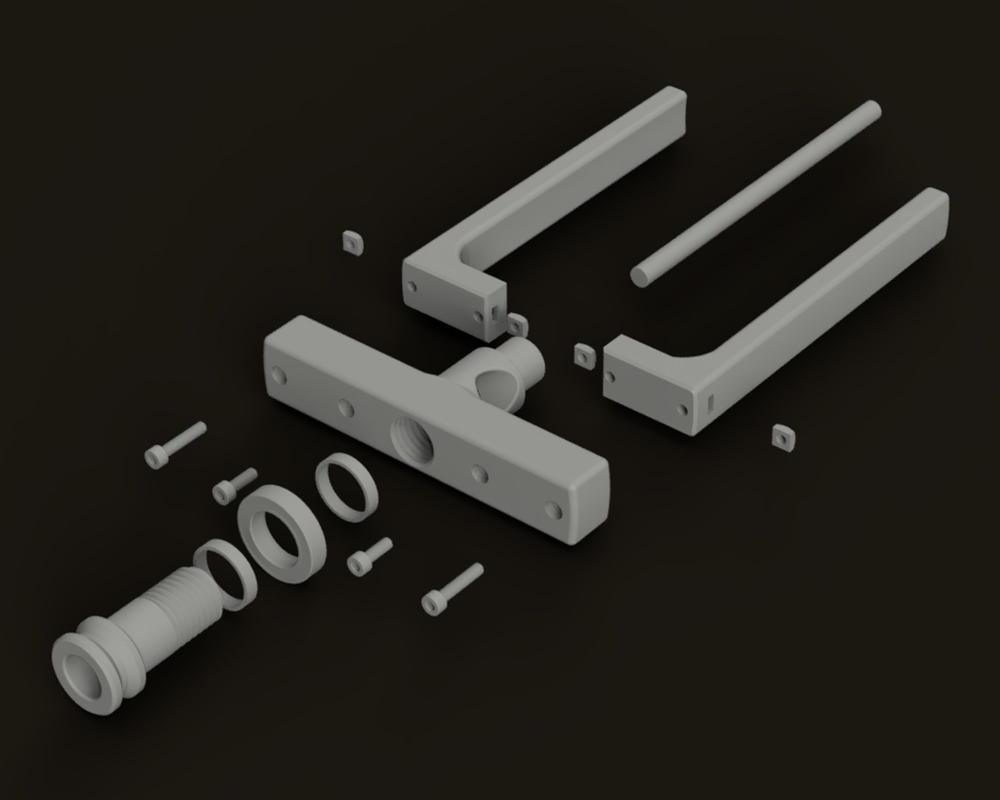
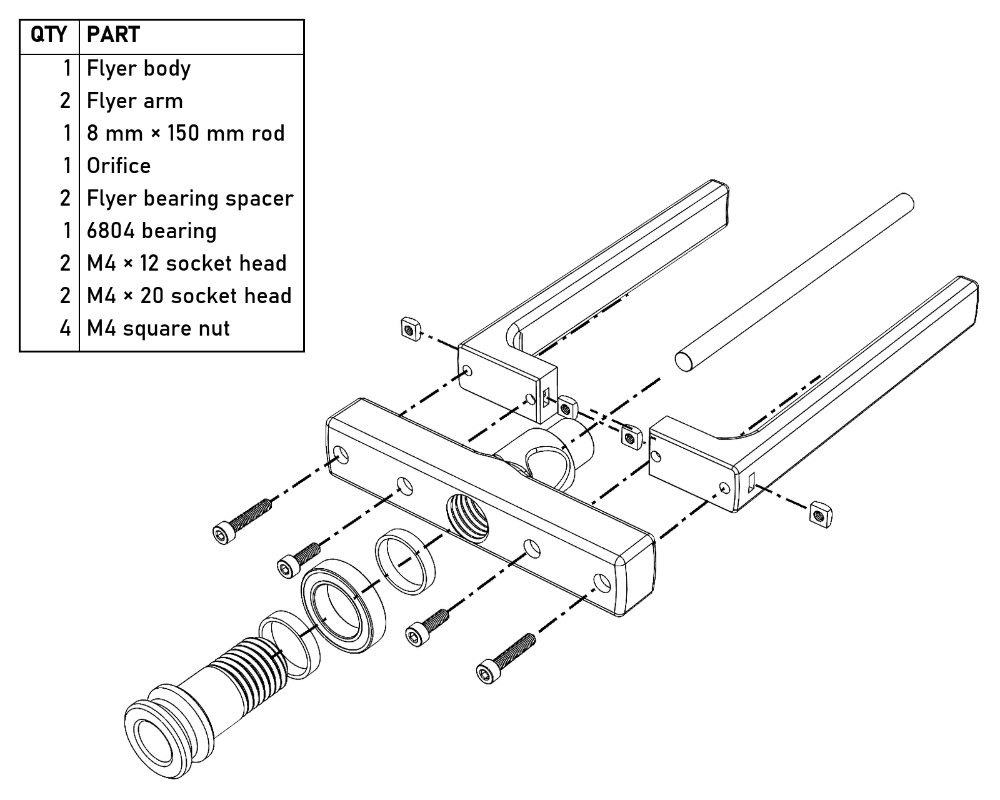
The arms’ square nuts each go in from the nearest outside edge of the arm. The M4×12 go in the inside holes and the M4×20 in the outside holes.
- Test-fit the flyer hooks on the arms. They should slide smoothly with very little friction; if they catch, lightly sand the arms with 180 grit until they don’t. Sand them under running water to keep the dust down, or rinse them afterwards to get rid of the powder and bring back their factory sheen.
- The flyer takes four hooks, two on each arm, and the flyer assembly file only has two, so print another pair (or just copy the hook in your slicer). With only one per arm the flyer goes out of balance as soon as the hooks aren’t in matching spots, and it gets worse the faster you spin. Thread a cup hook into the small hole in each flyer hook, press an M4 square nut into each one, and start an M4×12 thumbscrew, keeping the tip out of the arm slot. Slide the hooks onto the arms and secure them with the thumbscrews. It takes very little force; don’t overtighten them.
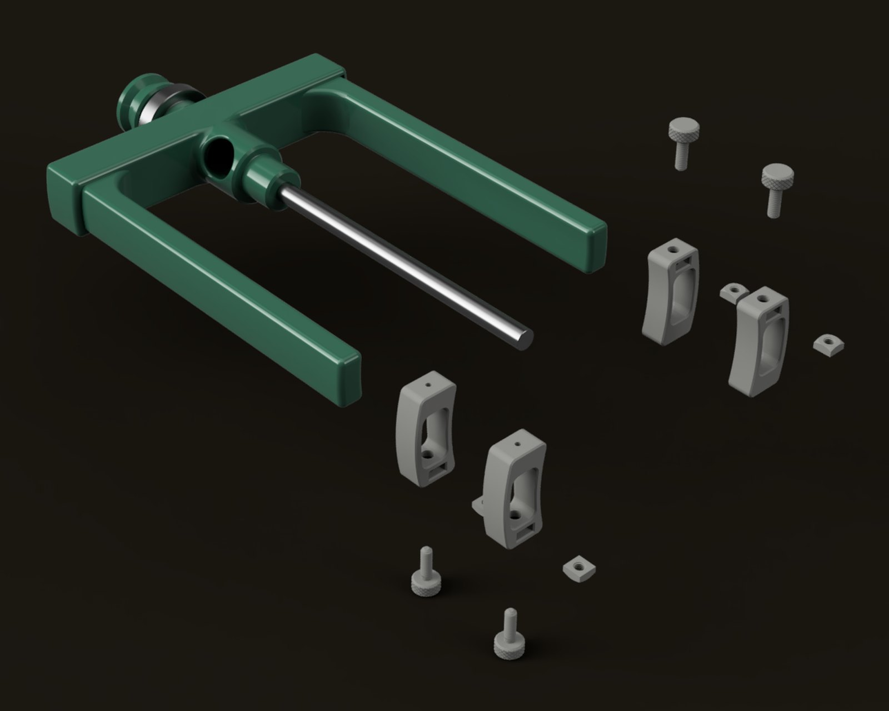
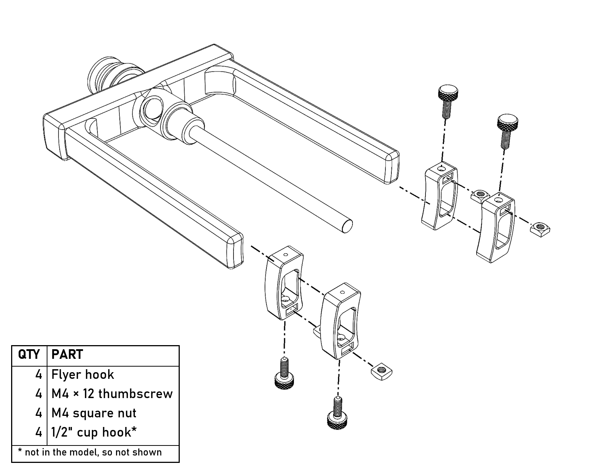
The hooks slide on from the back of the arms, front ones first. Each square nut goes in from the rear of its hook, and the cup hooks aren’t in the model.
- For the bobbin, press a 608 into the front flange and screw the rear flange into it. Press the bearing spacer into the rear flange, press the second 608 in after it, and screw on the rear bearing retainer. Arachne bobbins work on Clotho too.
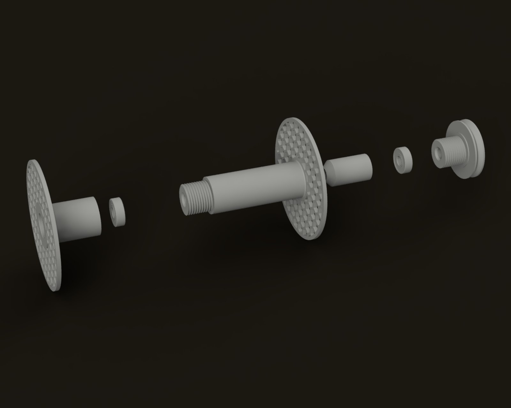
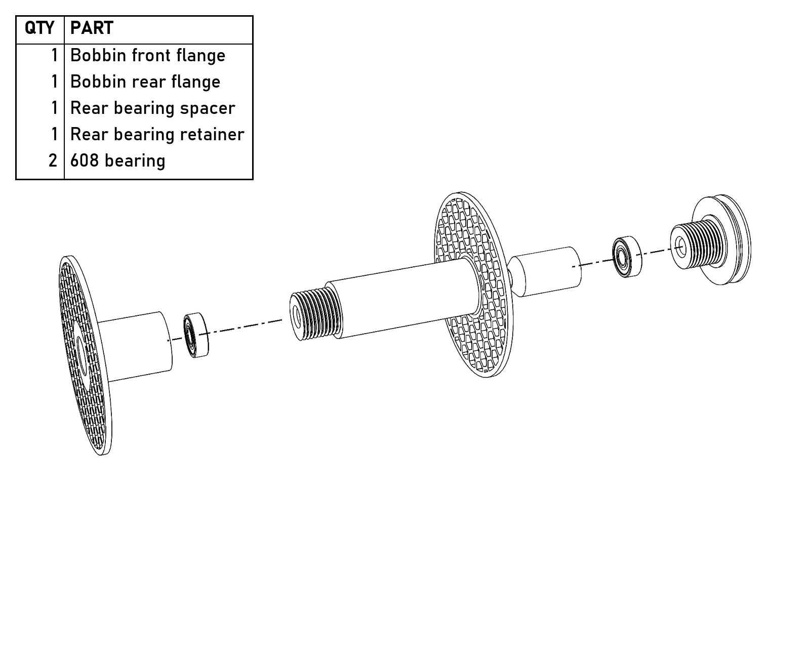
The bobbin, in the order it goes together.
Final assembly
- Tie about 300 mm (12″) of cotton twine to the brake tension screw’s barrel and screw it into its spreader. It should be snug but turnable with your fingertips: too loose and it won’t hold tension, too tight and it’s a pain to use. If it’s too loose, push a 10 mm piece of the belt into the slot in the threads.
- Hook the brake spring into the brake spring retainer with a thumbscrew through its eye and into the square nut you put there earlier, so it doesn’t fall off every time you let off the tension. Tie the twine to the spring.
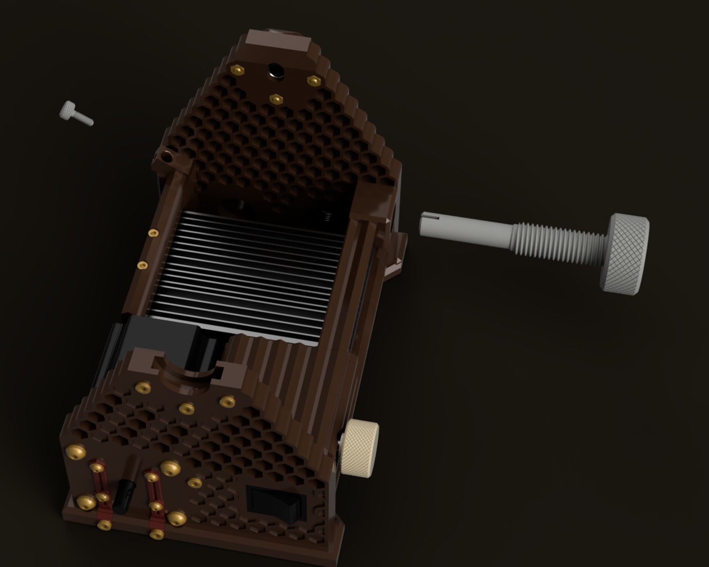
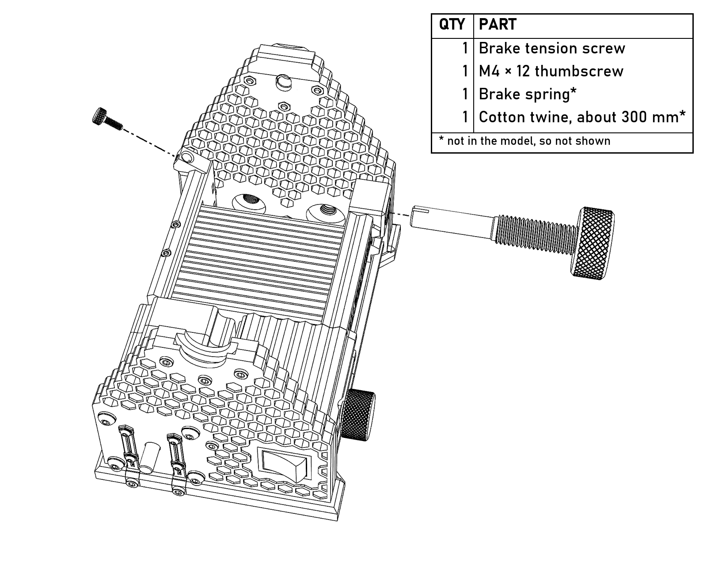
The brake tension screw goes into its spreader from the side, and the thumbscrew goes into the brake spring retainer through the spring’s eye. The spring and twine aren’t in the model.
- Set the flyer and bobbin in place: tilt the assembly, push the rod into the 608 in the rear riser, then lower the front bearing into its saddle on the front riser. Removal is the reverse. If you lift too much before pulling it out the bearing binds, if you push too far the rod binds, and if you miss the bearing nothing goes together. It may be awkward the first couple of times, but everyone who has played with it catches on quickly.
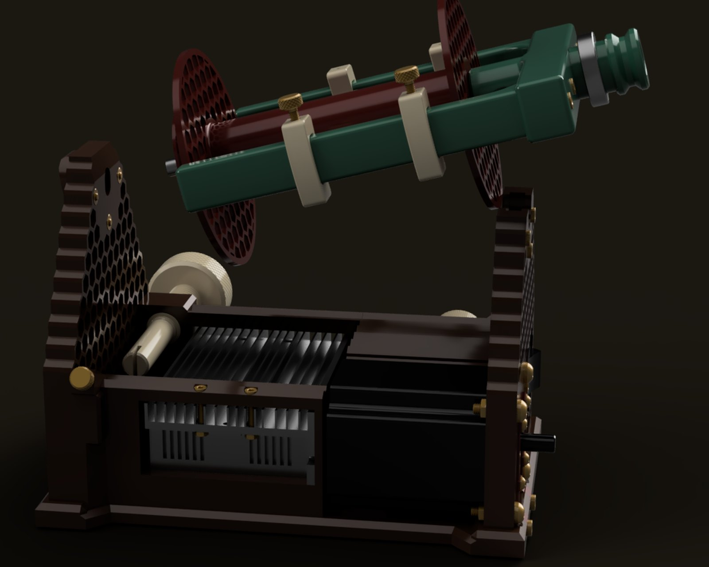
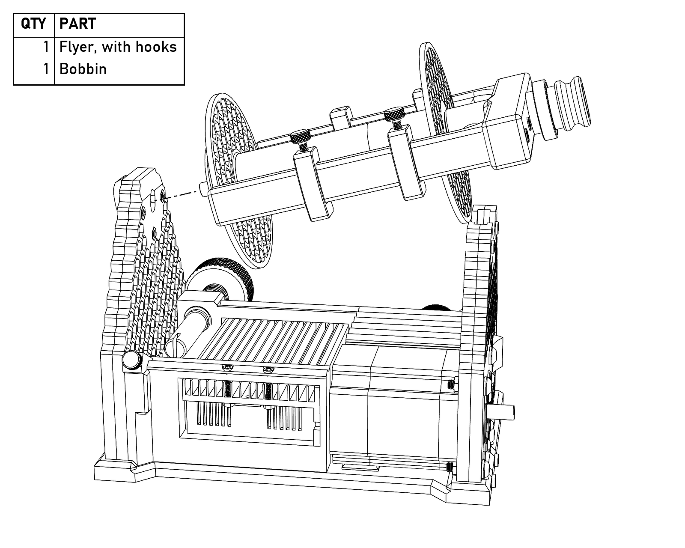
Tilt the flyer and bobbin nose-up, push the end of the rod into the 608 in the rear riser, then lower the front bearing into its saddle.
- Route the brake line over the bobbin’s brake pulley.
- Cut about 200 mm of belt and join the ends with your preferred method. I use a heat gun and a small jig, which is included in the print files.
- Put the belt on. In use, the belt is what holds the front bearing in its saddle and the brake line holds the rear bearing in place.
Setup
- Switch centered (off), apply power. Green run light steady, red alarm light off. If the red light is on, stop and check your wiring before going any further.
- The two trim pots on the driver (speed limit and current limit) are small unmarked crosses. Both should still be all the way counterclockwise.
- Set the current limit to about 50% first.
- With the flyer and belt on and the speed knob at maximum, slowly and carefully bring up the speed limit pot to the fastest speed you think you’ll ever want. Don’t get crazy; it’s nicer to have a usable, easily selectable top speed than a terrifying one, and it’s easy to turn up later. A meter that reads Hz on the driver’s speed output will give you the exact number if you care, but you don’t need it.
- Then do your spinning with the knob or the foot pedal below that. At the very bottom of the knob’s travel there’s a dead stop where the driver stops the motor.
- Turn the knob down, reverse, and bring it back up to check the other direction. If S and Z come out backwards, pop the switch out and flip it over; the mount is symmetrical for exactly that reason.
Changing bobbins
Take the belt off, lift the front of the flyer out of its saddle, and pull the rod out of the rear bearing (the bearing pivots in its cavity to let it come out at an angle). Putting it back is the reverse. No tools, and no loose parts to lose in the couch.
Foot pedal (optional)
This is optional, but fun. The assembly is simple enough that it barely needs instructions.
- Print the pedal parts and assemble the pivot. Either one M4×80 (or a 5/32″ × 3″ machine screw) with a nylock nut or a couple of shorter screws will work, but the shorter ones will probably make the tension easier to adjust.
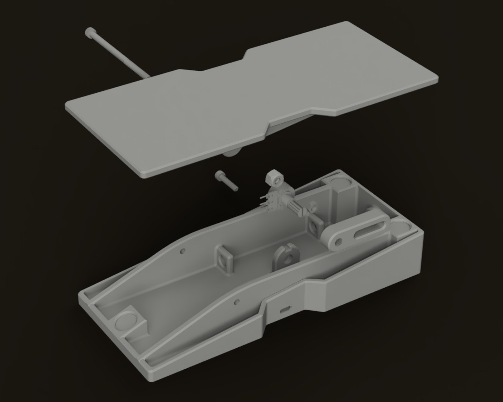
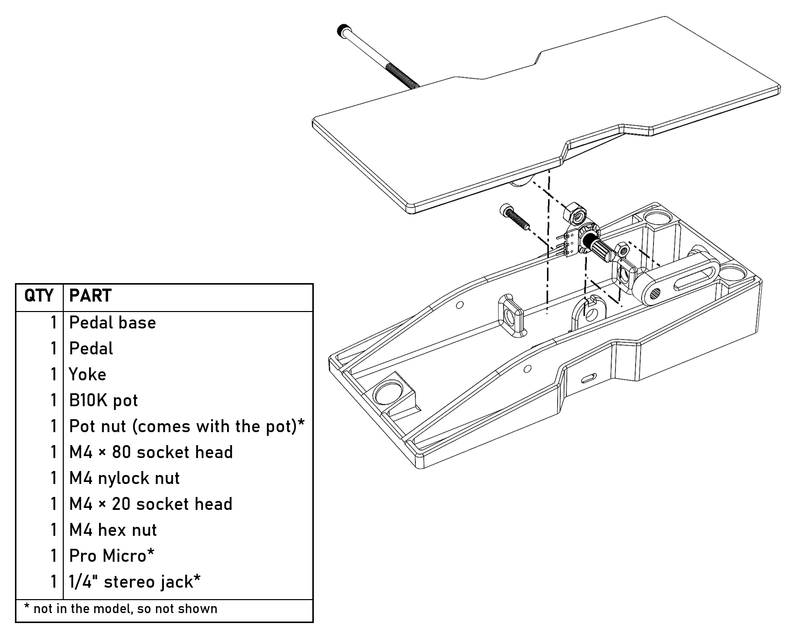
The pedal, pot and yoke. The pot is held in with the nut that comes with it, and the Pro Micro and jack aren’t in the model.
- Wire the pedal (Wiring explains tip, ring and sleeve, and the solder-or-crimp and holes-first notes apply here too). Pot: hold it with the shaft pointing at you and the pins at the bottom, the same as the panel pot. The right-hand pin goes to the Pro Micro’s VCC, the middle pin to A0, and the left-hand pin to GND, so pressing the pedal turns the voltage up. Get this one right the first time too; if it’s backwards, the pedal won’t start, and the setup page or serial monitor says “Pedal not at rest” with your foot off it. Pro Micro to the pedal’s jack, using only the tip, ring and sleeve lugs: VCC to the tip, pin 9 to the sleeve, and GND to the ring. That matches the spinner’s jack, so a plain ¼″ stereo cable connects them. Then flash the firmware from the files. Then calibrate it and set the dead zones on the pedal setup page, or by hand with the serial commands in the comments at the top of the source code.
- The pedal only swings the pot through about a fifth of its rotation, which is why there’s a microcontroller in there at all: it calibrates itself to your pedal. Plugging the pedal in disconnects the knob on the spinner.
Files
The STEP model, printable assemblies, and foot pedal firmware are on Printables and GitHub. Everything is CC BY-SA, so remix away, and tell me what you build, break, or improve.
Get the files on Printables → View on GitHub